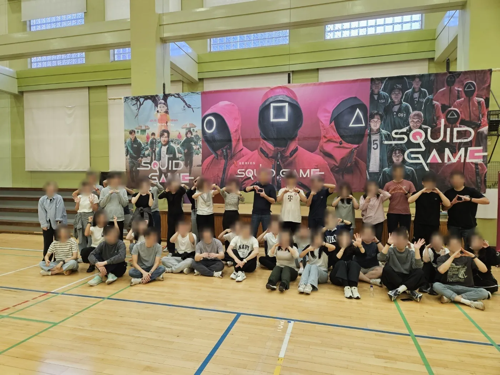
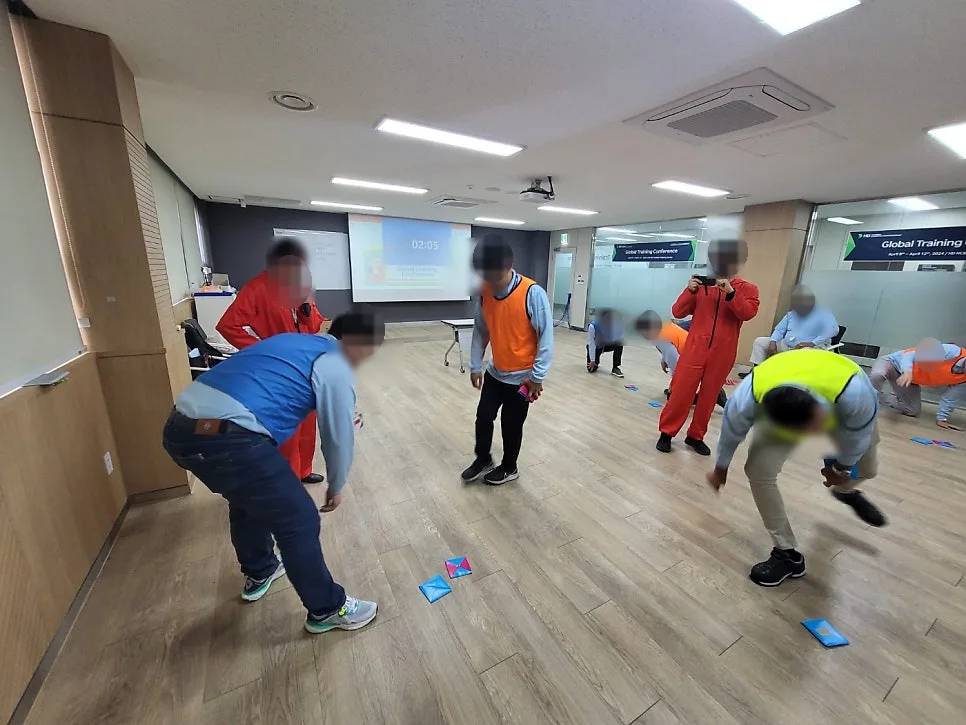

광진 영어 체육대회를 준비하신다면 「팀빌딩으로 시작해 체육대회로 끝내는」 구성을 먼저 검토해 보세요. 외국인 직원과 한국인 직원이 처음부터 경쟁 종목에 들어가면 어색함이 오래가지만, 팀 미션으로 몸을 푼 뒤 체육대회로 넘어가면 응원이 자연스럽게 붙습니다. 대표 블로그에는 서울 워커힐 호텔에서 진행한 건설사 외국계 지사 영어 팀빌딩 & 오징어게임 체육대회 기록이 있습니다. 이 글은 그런 체육대회를 처음 맡은 담당자를 위한 준비 순서입니다.

- 외국계 회사 체육대회는 팀빌딩 미션으로 시작해 팀 대항 종목으로 넘어가면 분위기가 빨리 오릅니다.
- 오징어게임 체육대회는 콘셉트를 이미 아는 사람이 많아 영어 규칙 설명이 짧아지는 장점이 있습니다.
- 장소가 실내인지 야외인지에 따라 넣을 수 있는 종목과 음향 준비가 달라집니다.
- 진행 언어는 참석자 국적과 한국어 가능 여부를 보고 영어로만, 또는 한국어 · 영어 동시 진행으로 정합니다.
1. 광진 영어 체육대회, 워커힐 호텔 기록에서 시작합니다
대표 네이버 블로그 2026년 9월 14일 글은 「서울 워커힐 호텔에서 진행된 건설사 외국계 지사 영어 팀빌딩 & 오징어게임 체육대회」를 다룹니다. 워커힐 호텔은 서울 광진구에 있습니다. 행사장 사진과 진행 장면은 블로그 원문에서 보실 수 있습니다.
이 기록에서 눈여겨볼 점은 행사 이름 자체입니다. 「영어 팀빌딩」과 「오징어게임 체육대회」가 한 행사 안에 함께 들어 있습니다. 외국계 회사 체육대회는 순수한 운동 경기보다, 팀을 섞어 놓고 함께 웃는 시간이 더 중요한 경우가 많기 때문입니다.
2. 팀빌딩과 체육대회, 섞어서 짜는 법
팀빌딩은 팀이 과제를 함께 풀면서 서로 알아 가는 시간이고, 체육대회는 팀끼리 겨루며 응원하는 시간입니다. 하루 안에 둘을 넣는다면 팀빌딩을 앞에, 체육대회를 뒤에 두는 편이 좋습니다. 같은 팀으로 미션을 한 번 해 본 뒤에 경쟁을 시작해야 응원도 커집니다.
| 순서 | 내용 | 영어 진행 포인트 |
|---|---|---|
| 개회 · 팀 나누기 | 조끼 색깔로 팀 구분, 팀 이름 정하기 | 팀 이름을 영어로 정하게 하면 분위기가 빨리 풀립니다 |
| 준비운동 | 다 함께 따라 하는 동작 | 말보다 동작으로, 구호는 짧게 |
| 팀빌딩 미션 | 협동해야 풀리는 과제 | 규칙은 한 문장, 시범 먼저 |
| 오징어게임 체육대회 | 팀 대항 종목 여러 개 | 점수는 화면이나 점수판에 바로 표시 |
| 시상 · 마무리 | 팀 순위 발표, 단체 사진 | 수상 팀을 영어 · 한국어로 함께 발표 |

3. 오징어게임 체육대회 종목 고르기
오징어게임 콘셉트의 장점은 설명이 짧다는 것입니다. 드라마를 본 사람이 많아 「무궁화 꽃이 피었습니다」, 「줄다리기」, 「구슬치기」 같은 이름만으로도 대략 무엇을 하는지 압니다. 다만 드라마처럼 탈락이 많은 방식은 체육대회에 맞지 않으니, 탈락 대신 점수로 바꾸는 것이 좋습니다.
- 무궁화 꽃이 피었습니다 응용 — 탈락 대신 출발선으로 돌아가기
- 줄다리기 — 체육관이나 운동장처럼 바닥이 넓고 단단한 곳에서
- 딱지 · 구슬치기 — 앉아서 하는 종목이라 휴식 겸 넣기 좋습니다
- 이어달리기 — 마지막 종목으로 두면 응원이 가장 커집니다
4. 실내 · 야외에 따라 달라지는 준비
호텔 연회장이나 체육관 같은 실내는 날씨 걱정이 없지만 공간이 정해져 있어 뛰는 종목이 제한됩니다. 운동장이나 잔디밭 같은 야외는 종목 선택이 자유로운 대신 날씨와 소리 퍼짐을 챙겨야 합니다. 장소가 정해져 있다면 그 공간에 맞는 동선과 프로그램을 짜고, 정해지지 않았다면 인원에 맞는 실내체육관이나 운동장을 함께 찾을 수 있습니다.
| 구분 | 실내(연회장 · 체육관) | 야외(운동장 · 잔디밭) |
|---|---|---|
| 종목 | 짧은 거리 · 앉아서 하는 종목 위주 | 이어달리기 · 줄다리기 등 넓게 |
| 음향 | 울림을 줄이는 스피커 위치 | 참가자 쪽으로 모으는 배치, 무선 마이크 |
| 날씨 | 걱정 적음 | 비 올 때 옮길 실내 공간 확인 |
| 바닥 | 카펫 · 마루 미끄럼 확인 | 잔디 · 흙 상태 확인 |

5. 진행 언어 정하기와 문의 방법
외국계 지사 체육대회는 참석자 구성이 회사마다 다릅니다. 외국인이 대부분이면 영어로만, 한국인 직원이 더 많으면 한국어 · 영어 동시 진행이 편합니다. 행사 전에 외국인 담당자나 본사 팀과 영어 Zoom 미팅을 하면 종목 · 시상 · 주의할 점을 미리 맞출 수 있습니다.
- 날짜 · 시간 · 인원
- 참석자 국적 구성과 한국어 가능 여부
- 장소(정해졌는지, 찾아야 하는지) · 실내인지 야외인지
- 팀빌딩을 함께 넣을지, 체육대회만 할지
정리되면 예약 · 문의로 남겨 주세요. 음향 · 조명과 팀빌딩 · 레크레이션 게임물품, 에어바운스도 함께 상담할 수 있습니다. 비 올 때 대체 프로그램은 인천 영어 팀빌딩 글에 정리해 두었습니다.
자주 묻는 질문
체육대회를 호텔에서도 할 수 있나요?
호텔 연회장처럼 실내에서도 짧은 거리 종목과 앉아서 하는 종목 위주로 구성하면 가능합니다. 뛰는 종목이 많다면 실내체육관이나 운동장을 권합니다.
오징어게임을 모르는 직원이 있어도 괜찮을까요?
종목마다 시범을 먼저 보이고 규칙을 짧게 설명하니 드라마를 보지 않았어도 참여할 수 있습니다.
외국인학교나 유학생 운동회도 영어로 진행하나요?
네. 체육관 · 운동장 명랑운동회를 영어로 진행하며, 유학생 · 외국인학교 운동회도 진행합니다.